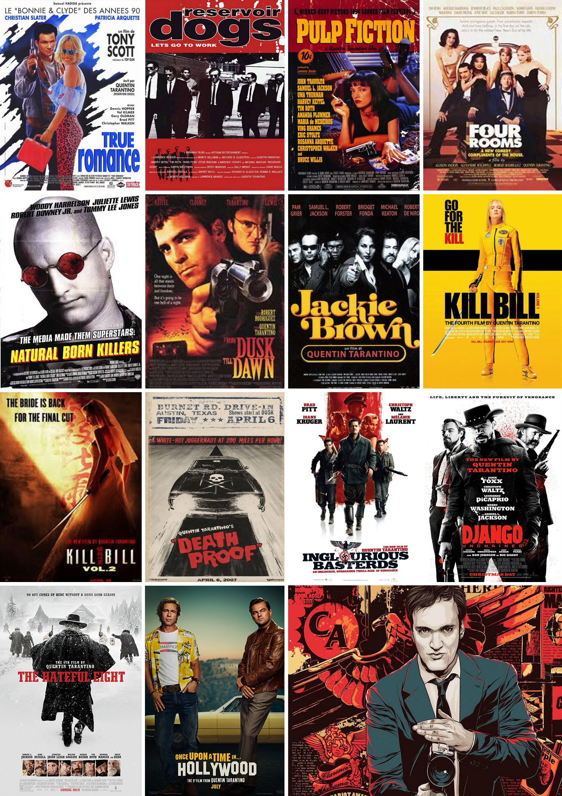

- ACTOR
- GUIONISTA
- DIRECTOR DE CINE
- EDITOR DE CINE
- PRODUCTOR DE CINE
- ACTOR DE CINE
- ESCRITOR
- ACTOR DE TV.
- REALIZADOR

Nacio el 27 de marzo de 1963 en Tennessee, Estados Unidos.
Narbonne Highschool / Alexander Fleming Middle School
Crítica cinematográfica, teoría cinematográfica, una hazaña de reportajes y una maravillosa historia personal, todo está escrito con una voz singular reconocible inmediatamente como QT y con la rara perspectiva sobre el cine posible solo de uno de los más grandes practicantes de la forma de arte.
Con el dinero que sacó de su venta financió su primera película, 'Reservoir dogs', que contó con Harvey Keitel desde el primer momento debido a que éste quedó encantado con el guión.
Quentin Tarantino y Roger Avary, amigos desde hace mucho tiempo y, a veces, colaboradores, se reúnen nuevamente para un podcast sobre cine clásico y cineastas llamado "The Video Archives Podcast", que los sigue viendo cintas VHS originales del Video Archive, donde trabajaron juntos.